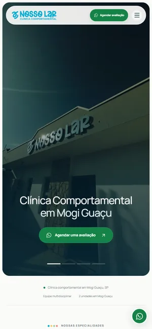
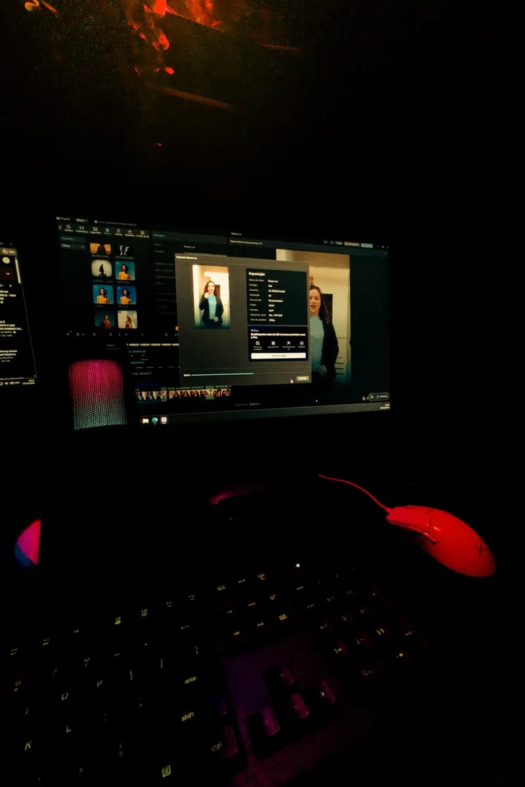
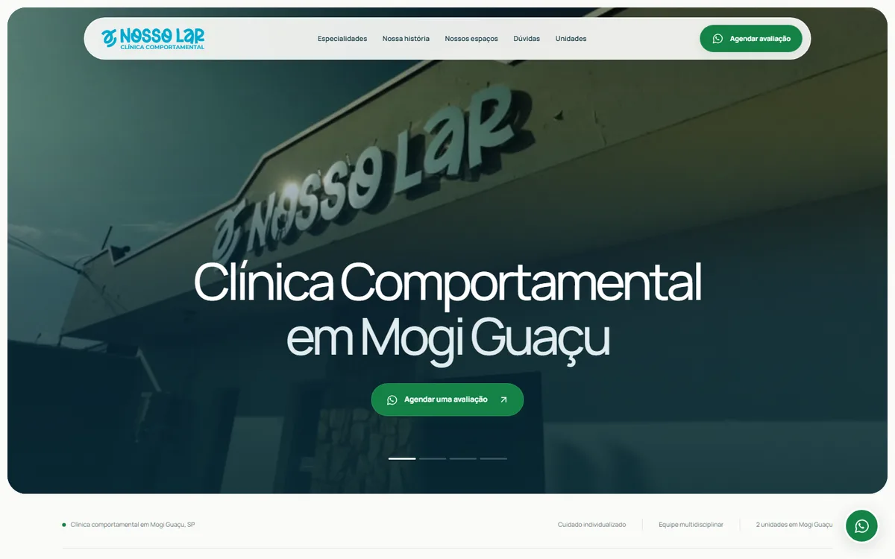
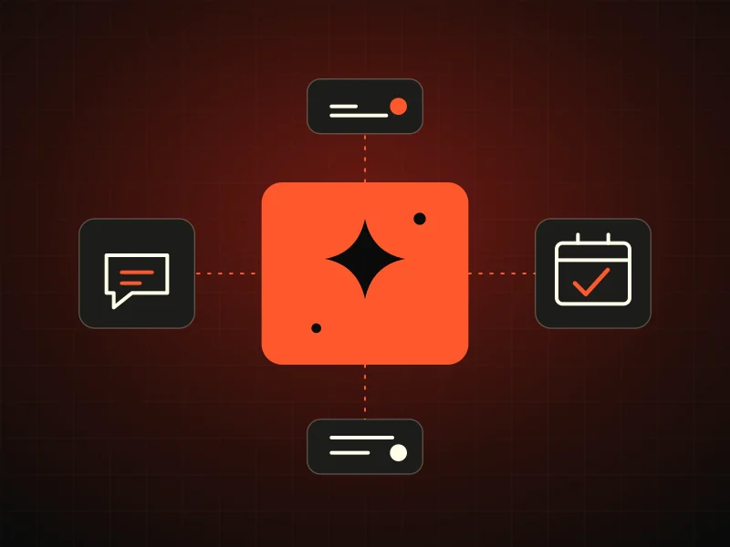
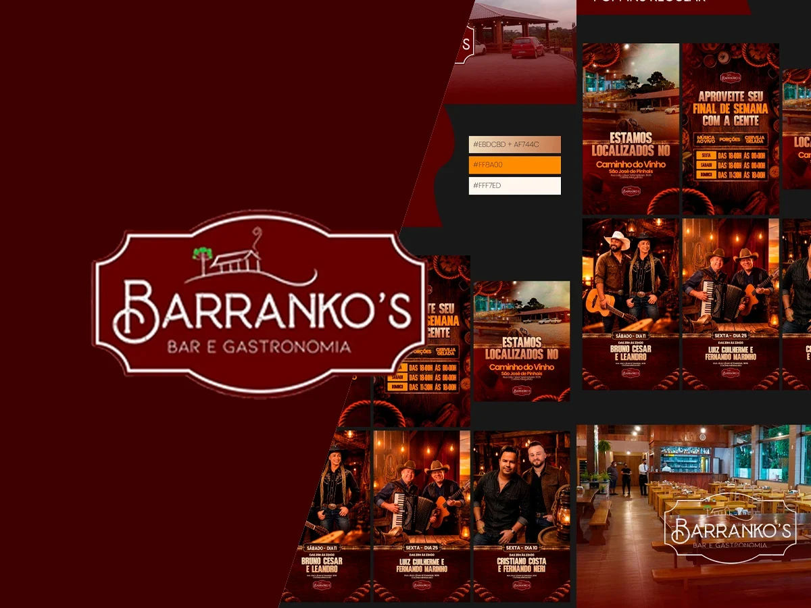
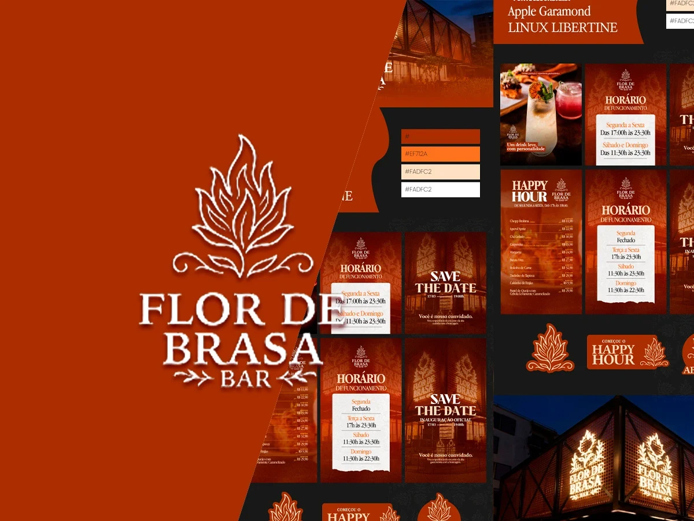

No ar
Clínica Nosso Lar
Site institucional · SaúdeSite da clínica comportamental em Mogi Guaçu, com especialidades, unidades e agendamento pelo WhatsApp.
Visitar o siteCRAVO CREATIVE STUDIO
Posts, vídeos, sites e automação com IA para o seu negócio ser encontrado e lembrado.

Você cuida do seu negócio.
A Cravo ajuda a contar sua história com design, vídeo e estratégia para aproximar sua marca das pessoas.
Somos uma agência de marketing em Mogi Guaçu. Criamos posts, outdoors, vídeos, sites e automações com IA para negócios da cidade e da região. Começamos ouvindo o que você precisa.
Temos um carinho especial pela gastronomia.
E curiosidade de sobra por todos os outros negócios.
Seis frentes para o seu negócio aparecer, ser lembrado e atender melhor.
Pautas, textos e posts para o seu Instagram acontecer toda semana, com a cara do seu negócio.
Saiba maisOutdoors, faixas, banners, posts e materiais impressos que chamam atenção na rua e na tela.
Saiba maisA gente vai até você, em Mogi Guaçu e região, e registra seu negócio com cara de cinema.
Saiba mais
Reels, stories, anúncios e vídeos institucionais com ritmo, legenda e trilha para prender até o fim.
Saiba mais
Landing pages e sites rápidos, bonitos e feitos para o cliente chamar no WhatsApp.
Saiba mais
Atendimento, respostas e rotinas que funcionam sozinhos: WhatsApp, agendamentos e IA no seu dia a dia.
Saiba maisTambém fazemos Branding e identidade visual Alinhamento visual Tráfego pago
Conte rapidamente como é o seu negócio. A gente indica o melhor primeiro passo.
Designer gráfico e estrategista criativo. Há mais de 6 anos, trabalho com identidade visual, conteúdo e sites. Na Cravo, é comigo que você conversa sobre o seu projeto.
MAIS SOBRE MIMSites, vídeos e posts criados pela Cravo para negócios de Mogi Guaçu e região.


Mostre o que você precisa e receba uma proposta com o que será feito e o valor.
Conversamos, planejamos, criamos e acompanhamos o projeto com você.
Sua história, seu momento, o que você quer construir. Antes de criar, a gente precisa conhecer.
Juntamos seus objetivos com nosso olhar. Um plano claro para dar sentido a cada escolha.
Você acompanha a criação, dá sua opinião e participa dos ajustes. A gente cuida da execução.
O trabalho continua depois de publicar. Observamos, aprendemos e pensamos no que vem agora.
O que costumam perguntar antes de começar um projeto com a Cravo.
Cada negócio precisa de uma coisa diferente, então não trabalhamos com tabela fechada. Você conta o que precisa pelo WhatsApp, a gente entende o contexto e envia uma proposta com o que será feito e o valor.
Pode. Dá para começar por uma peça, um vídeo, uma landing page ou uma automação e aumentar o trabalho depois, se fizer sentido.
Atendemos Mogi Guaçu e região. Captações de vídeo e foto acontecem no seu espaço, com deslocamento combinado. Design, edição, sites e automação também podem ser feitos à distância.
Ajuda, mas não é obrigatório. Se você ainda não tem, podemos criar. Se já tem, organizamos o que existe para os próximos materiais seguirem o mesmo padrão.
Funciona melhor onde há tarefas repetidas: responder as mesmas dúvidas, confirmar horários, organizar contatos e enviar lembretes. Conversamos primeiro para ver se vale a pena no seu caso.
Conta pra gente o que seu negócio precisa. Podemos conversar pelo WhatsApp ou pelo Instagram.